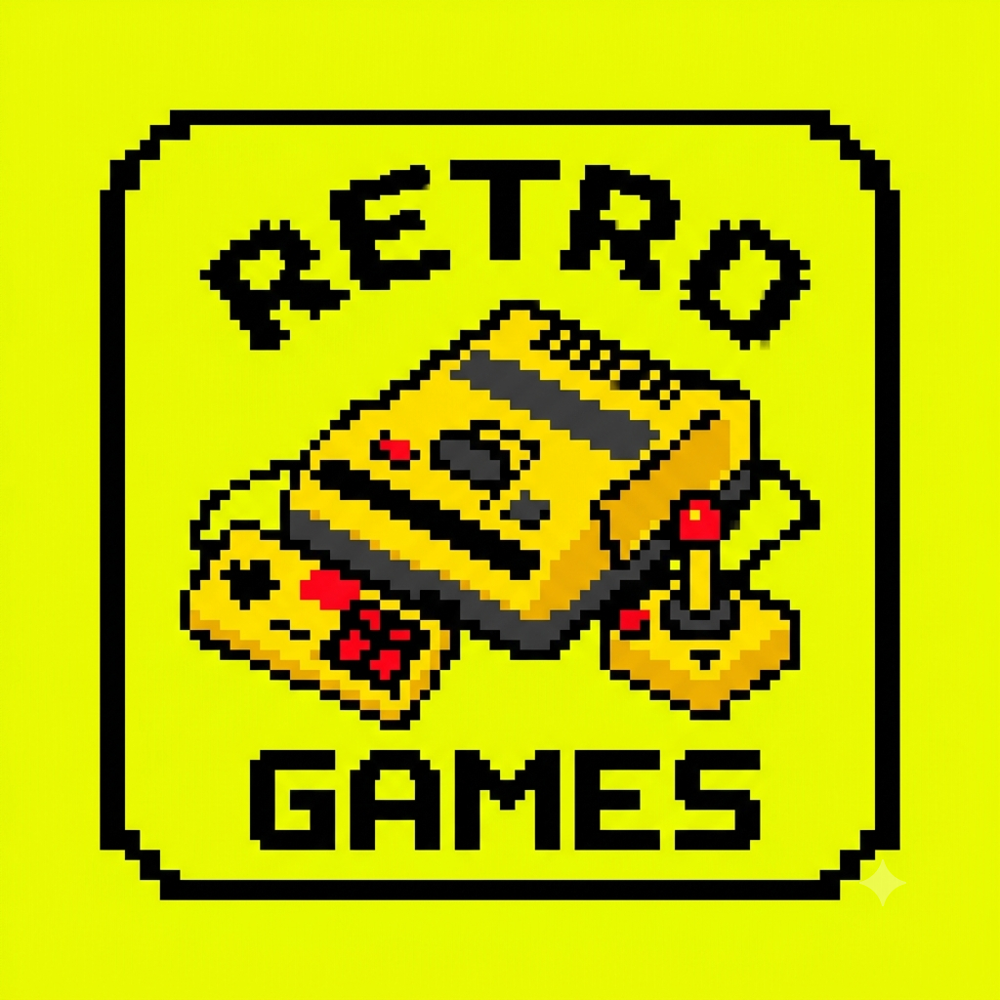

Meu primeiro post Por: Kauan Marques Boas-vindas ao meu novo blog! Aqui vou compartilhar dicas de programação e curiosidades da área de tecnologia. 👍🏻0 🇧🇷0 Para configurar o contraste de cor entre o fundo e as cores, acesse Color Contrast Checker
 Minha segunda publicacao Top 3 melhores games da era 16 bits 1º super Mario - SNES 2º Super Metroid - SNES 3º Snake - SNES 👍🏻0 🇧🇷0